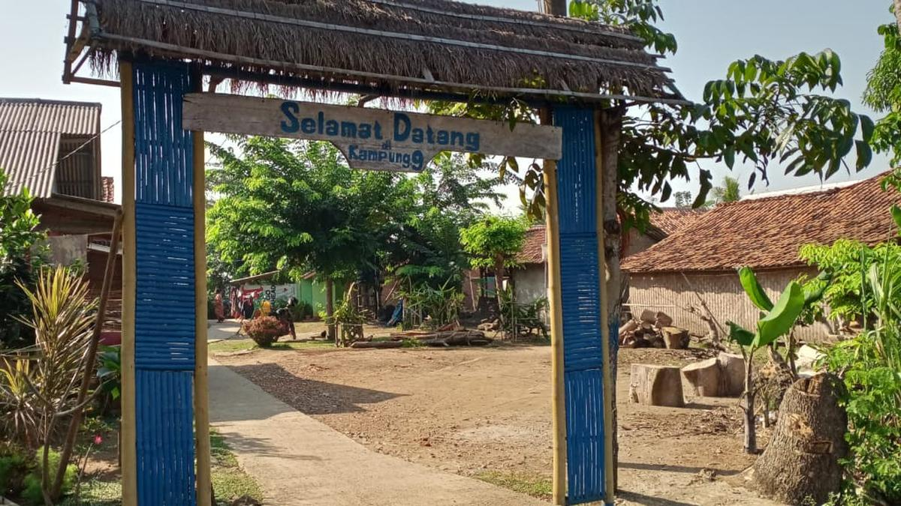
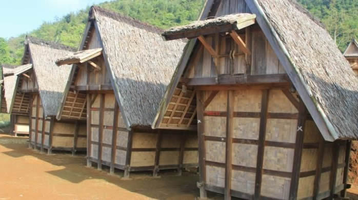
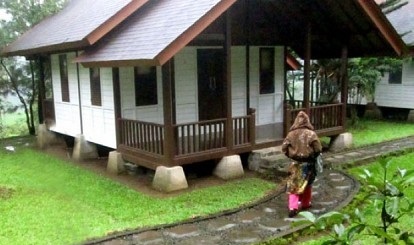
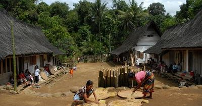

Sajarah Kampung Adat Salapan
Kampung Salapan perenahna di Désa Gempol, Kacamatan Banyusari, Kabupaten Karawang. Kampung ieu saméméhna katelah Kampung Babakan Nonolo atawa Kampung Timbul. Dina taun 2010, sanggeus kapanggih bata beureum ukuran 20 x 35 cm, ngaran kampung ieu robah jadi Kampung Salapan.
Lokasi Kampung Adat
Kampung Salapan perenahna di Désa Gempol, Kacamatan Banyusari, Kabupaten Karawang, Jawa Barat. Lokasina aya di tengah sawah, kira-kira 31 kilometer ti puseur Kota Karawang.
Struktur Organisasi
Kampung ieu dihuni ku 9 kulawarga. Ketua adat di kampung ieu disebut "Kuncen", anu mibanda peran penting dina ngajaga adat sareng ngalaksanakeun upacara adat.
Tradisi & Kapercayaan
- Jumlah kulawarga di Kampung Salapan teu meunang leuwih ti 9.
- Tradisi "Ngabungbang" atawa "Melekan", nyaéta kagiatan jagjag sapeuting dina peuting Saptu.
- Upacara "Nyalin" nalika panén padi.
- Pakaian adat dina acara husus warna biru dongker.
Semua Sumber:Merdeka.com